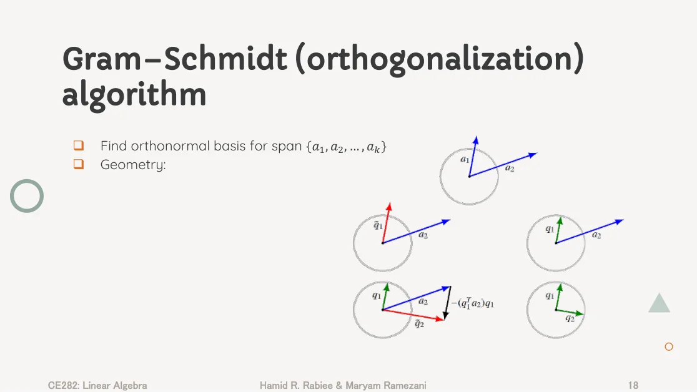
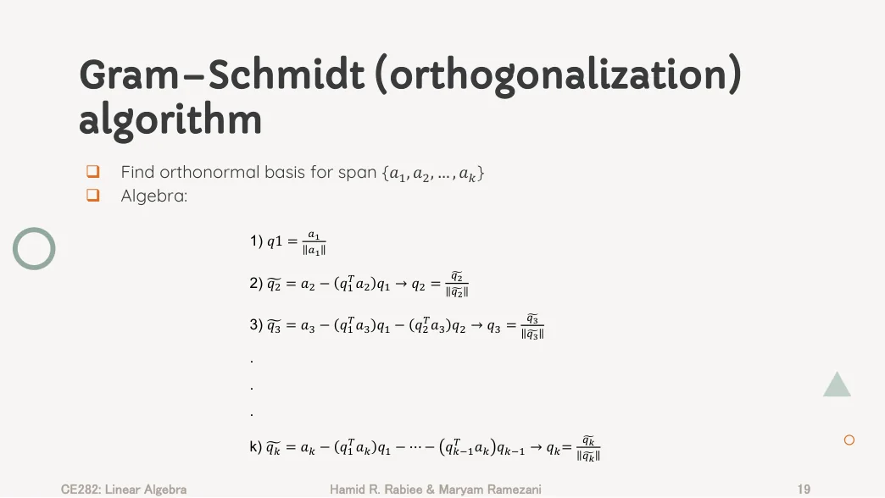
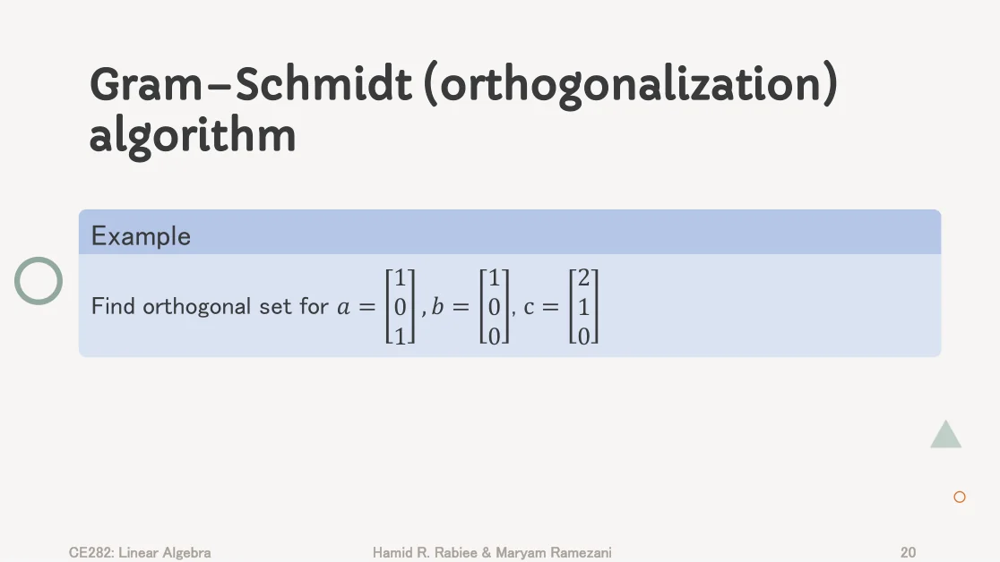
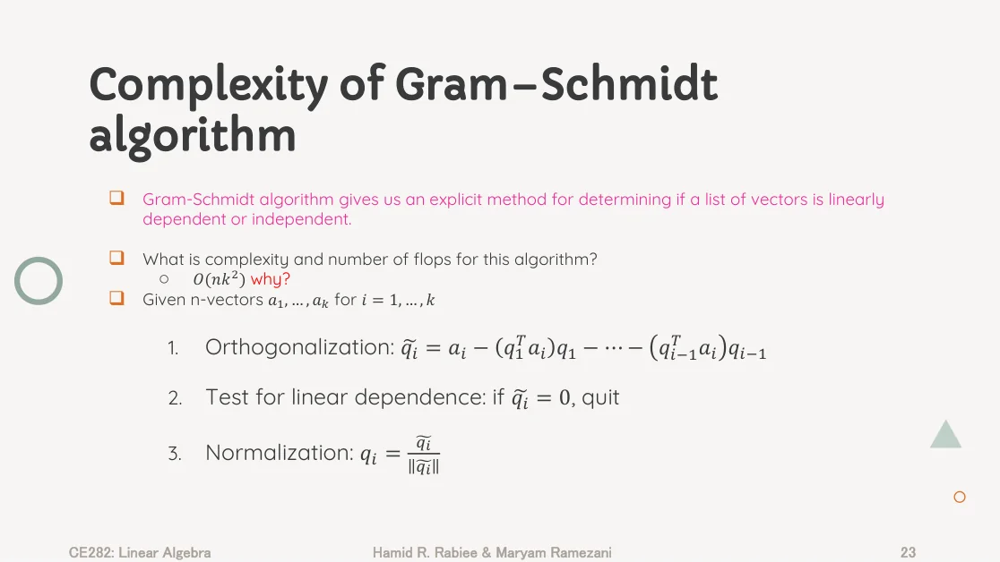
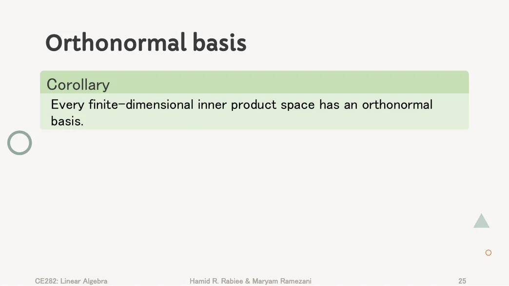
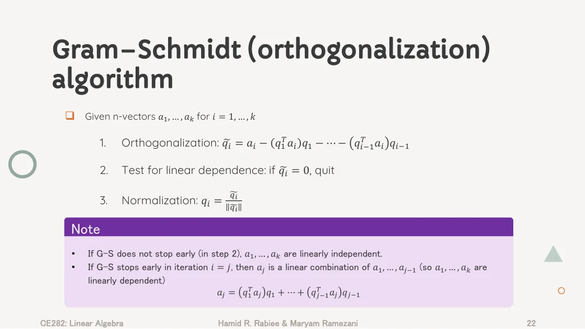

بخش ۴: Gram–Schmidt — الگوریتم گرام–اشمیت
چرا گرم–اشمیت را ساختهایم؟ یک پایهٔ معمولی برای توصیف زیرفضا کافی است، اما محاسبهٔ مختصات و تصویر روی آن اغلب به حل دستگاه نیاز دارد. اگر همان زیرفضا را با پایهٔ متعامد یکه نمایش دهیم، ضریب هر جهت با یک ضرب داخلی به دست میآید.
پس هدف الگوریتم این نیست که صرفاً «بردارها را عوض کند»، بلکه میخواهد ضمن ثابت نگه داشتن \(\operatorname{span}\)، جهتهای دارای همپوشانی را به جهتهای عمود تبدیل کند.
اسلایدهای ۱۵ تا ۲۳
این قسمت را باید خوب یاد بگیری؛ هم سؤال محاسباتی دارد، هم سؤال اثباتی.
۱. ایدهٔ اصلی

فرض کن دو بردار مستقل خطی داریم که بر هم عمود نیستند.
میخواهیم آنها را به دو بردار متعامد یکه تبدیل کنیم، بدون اینکه فضای تولیدشده عوض شود.
راهحل:
- بردار اول را یکه میکنیم.
- مؤلفهٔ بردار دوم در راستای بردار اول را حذف میکنیم.
- بردار باقیمانده را یکه میکنیم.
- برای بردار سوم، مؤلفههای راستای هر دو بردار قبلی را حذف میکنیم.
فرمول:
\[ q_1=\frac{a_1}{\|a_1\|} \]
\[ r_2=a_2-(q_1^Ta_2)q_1 \]
\[ q_2=\frac{r_2}{\|r_2\|} \]
به طور کلی:
\[ \boxed{ r_k=a_k-\sum_{j=1}^{k-1}(q_j^Ta_k)q_j } \]
\[ \boxed{q_k=\frac{r_k}{\|r_k\|}} \]
چرا فرمول گرم–اشمیت بردار بعدی را عمود میکند؟

برای \(r_i=a_i-\sum_{j<i}\langle a_i,q_j\rangle q_j\)، با بردار قبلی \(q_\ell\) ضرب داخلی بگیر:
\[ \begin{aligned} \langle r_i,q_\ell\rangle &=\langle a_i,q_\ell\rangle-\sum_{j<i}\langle a_i,q_j\rangle\langle q_j,q_\ell\rangle\\ &=\langle a_i,q_\ell\rangle-\langle a_i,q_\ell\rangle=0. \end{aligned} \]
چرا جمع فقط یک جمله دارد؟ چون \(\langle q_j,q_\ell\rangle=\delta_{j\ell}\). این دقیقاً ترفند مهم پایهٔ متعامد یکه است.
مثال خود اسلاید ۱۸

بردارها:
\[ a=\begin{bmatrix}1\\\0\\\1\end{bmatrix}, \quad b=\begin{bmatrix}1\\\0\\\0\end{bmatrix}, \quad c=\begin{bmatrix}2\\\1\\\0\end{bmatrix} \]
مرحلهٔ اول:
\[ q_1=\frac{a}{\|a\|} =\frac1{\sqrt2}\begin{bmatrix}1\\\0\\\1\end{bmatrix} \]
مرحلهٔ دوم:
\[ r_2=b-(q_1^Tb)q_1 \]
\[ =\begin{bmatrix}1\\\0\\\0\end{bmatrix} -\frac12\begin{bmatrix}1\\\0\\\1\end{bmatrix} =\begin{bmatrix}1/2\\\0\\\\-1/2\end{bmatrix} \]
با نرمالسازی:
\[ q_2=\frac1{\sqrt2}\begin{bmatrix}1\\\0\\\\-1\end{bmatrix} \]
مرحلهٔ سوم:
\[ r_3=c-(q_1^Tc)q_1-(q_2^Tc)q_2 \]
با:
\[ q_1^Tc=q_2^Tc=\sqrt2 \]
نتیجه:
\[ r_3=\begin{bmatrix}0\\\1\\\0\end{bmatrix} \]
پس:
\[ q_3=\begin{bmatrix}0\\\1\\\0\end{bmatrix} \]
پایهٔ نهایی:
\[ \boxed{ \left\{ \frac{(1,0,1)}{\sqrt2}, \frac{(1,0,-1)}{\sqrt2}, (0,1,0) \right\} } \]
مثال اضافهٔ ۱: گرام–اشمیت دو بردار
\[ a_1=(1,1,0),\qquad a_2=(1,0,1) \]
ابتدا:
\[ q_1=\frac1{\sqrt2}(1,1,0) \]
سپس:
\[ q_1^Ta_2=\frac1{\sqrt2} \]
پس:
\[ r_2=(1,0,1)-\frac12(1,1,0) \]
\[ r_2=(1/2,-1/2,1) \]
نرم:
\[ \|r_2\|=\sqrt{\frac14+\frac14+1} =\sqrt{\frac32} \]
پس:
\[ \boxed{ q_2=\frac1{\sqrt6}(1,-1,2) } \]
پایهٔ متعامد یکه:
\[ \boxed{ \left\{ \frac{(1,1,0)}{\sqrt2}, \frac{(1,-1,2)}{\sqrt6} \right\} } \]
مثال اضافهٔ ۲: تشخیص وابستگی خطی
\[ a_1=(1,0),\quad a_2=(1,1),\quad a_3=(2,1) \]
گام اول:
\[ q_1=(1,0) \]
گام دوم:
\[ r_2=(1,1)-(1,0)=(0,1) \]
پس:
\[ q_2=(0,1) \]
گام سوم:
\[ r_3=(2,1)-2(1,0)-1(0,1)=(0,0) \]
پس الگوریتم به بردار صفر رسیده است.
این یعنی:
\[ a_3=a_1+a_2 \]
بنابراین بردارها وابستهٔ خطیاند.
نکته: اگر باقیماندهٔ یک مرحله صفر شد، نمیتوان آن را نرمال کرد. این مرحله یک وابستگی خطی را آشکار کرده است.
مثال اضافهٔ ۳: گرام–اشمیت روی توابع
در فضای چندجملهایهای درجهٔ حداکثر ۲ با ضرب داخلی:
\[ \langle f,g\rangle=\int_0^1f(x)g(x)\\,dx \]
پایهٔ اولیه:
\[ \{1,x,x^2\} \]
نتیجهٔ اجرای گرام–اشمیت:
\[ \boxed{ \left\{ 1,\ \sqrt3(2x-1),\ \sqrt5(6x^2-6x+1) \right\} } \]
برای مثال، بردار دوم از حذف تصویر \(x\) روی تابع ثابت ۱ به دست میآید:
\[ r_2=x-\langle x,1\rangle =x-\frac12 \]
سپس چون:
\[ \|r_2\|^2=\frac1{12} \]
داریم:
\[ q_2=\sqrt{12}(x-\frac12) =\sqrt3(2x-1) \]
برای تابع سوم نیز تصویر آن روی هر دو تابع قبلی حذف میشود. روش کاملاً مشابه بردارهای عددی است؛ فقط ضرب داخلی با انتگرال محاسبه میشود.
مثال پیشرفته: گرم–اشمیت روی \(P_2\) در بازهٔ متقارن
این بار فضای چندجملهایها و ضرب داخلی انتگرالی را در نظر بگیر:
\[\langle f,g\rangle=\int_{-1}^{1}f(x)g(x)\,dx,\qquad\{1,x,x^2\}.\]
برای تابع اول: \(\|1\|^2=\int_{-1}^1 1\,dx=2\)، پس \(q_1=1/\sqrt2\).
برای تابع دوم: \(\langle x,1\rangle=\int_{-1}^1x\,dx=0\)، پس نیازی به کم کردن تصویر نیست و چون \(\|x\|^2=2/3\):
\[q_2(x)=\sqrt{\frac32}\,x.\]
برای تابع سوم، دو تصویر را کم میکنیم:
\[ \begin{aligned} u_3(x)&=x^2-\frac{\langle x^2,1\rangle}{\langle 1,1\rangle}\,1 -\frac{\langle x^2,x\rangle}{\langle x,x\rangle}\,x\\ &=x^2-\frac13-0=x^2-\frac13. \end{aligned} \]
زیرا \(\int_{-1}^1x^2dx=2/3\)، \(\int_{-1}^1x^3dx=0\)، و:
\[\|u_3\|^2=\int_{-1}^1\left(x^2-\frac13\right)^2dx=\frac8{45}.\]
پس پایهٔ متعامد یکهٔ نهایی:
\[ \boxed{\left\{\frac1{\sqrt2},\ \sqrt{\frac32}x,\ \sqrt{\frac58}(3x^2-1)\right\}}. \]
این مثال نشان میدهد گرم–اشمیت دربارهٔ فضای ضرب داخلی است، نه فقط بردارهای عددی.
۲. چرا خروجی گرام–اشمیت پایهٔ متعامد یکه است؟
سه ویژگی اثبات میشود:
اول، هر \(q_i\) از طریق تقسیم بر نرمش یکه شده است.
دوم، در ساخت \(r_i\)، تصویر آن روی تمام بردارهای قبلی حذف شده؛ بنابراین بر همهٔ آنها عمود است.
سوم، چون فقط تصویرهای بردارهای قبلی را از بردار جدید کم کردهایم، فضای Span تغییر نمیکند.
پس:
\[ \boxed{ \operatorname{span}\{a_1,\ldots,a_k\} = \operatorname{span}\{q_1,\ldots,q_k\} } \]
۳. پیچیدگی زمانی

در مرحلهٔ \(i\)، تا \(i-1\) ضرب داخلی با بردارهای \(n\)بعدی داریم.
پس:
\[ T(n,k)=O\left(n\sum_{i=1}^ki\right) \]
و در نتیجه:
\[ \boxed{T(n,k)=O(nk^2)} \]
۴. نتیجهٔ وجود پایهٔ متعامد یکه

هر فضای ضرب داخلی متناهیبعدی دارای پایهٔ متعامد یکه است.
دلیل: از هر پایهٔ معمولی شروع میکنیم و با گرام–اشمیت آن را متعامد یکه میسازیم.
از گرم–اشمیت تا تجزیهٔ QR
اگر ستونهای مستقل ماتریس \(A\) را یکییکی با گرم–اشمیت متعامد یکه کنیم، آنها را به صورت ستونهای \(Q\) کنار هم قرار میدهیم:
\[\boxed{A=QR},\qquad Q^TQ=I.\]
ماتریس \(R\) بالامثلثی است و ضرایب تصویرها و طول بردارهای باقیمانده را در خود نگه میدارد. چرا مفید است؟ برای حل \(Ax=b\)، مینویسیم \(QRx=b\)، و با ضرب در \(Q^T\) معادلهٔ \(Rx=Q^Tb\) حاصل میشود. در حالت مربعی وارونپذیر این یک دستگاه بالامثلثی است؛ در حالت مستطیلی با ستونهای مستقل، همین ایده معادلات کمترین مربعات را ساده میکند.
هشدار: اگر \(Q\) مستطیلی با ستونهای متعامد یکه باشد، \(Q^TQ=I_k\) اما لزوماً \(QQ^T\ne I_n\). دومی تصویر روی فضای ستونی \(Q\) است.
وقتی الگوریتم به بردار صفر رسید، چه کنیم؟

اگر در مرحلهٔ \(j\)، بردار باقیمانده \(r_j=0\) باشد، بردار \(a_j\) در Span بردارهای قبلی قرار داشته است. در سؤال «آیا لیست ورودی مستقل است؟» جواب وابسته است. در سؤال «پایهٔ متعامد یکهٔ Span همهٔ بردارها را بساز»، این بردارِ وابسته را حذف کن و به بررسی بردارهای بعدی ادامه بده؛ صفر را هرگز نرمال نکن.